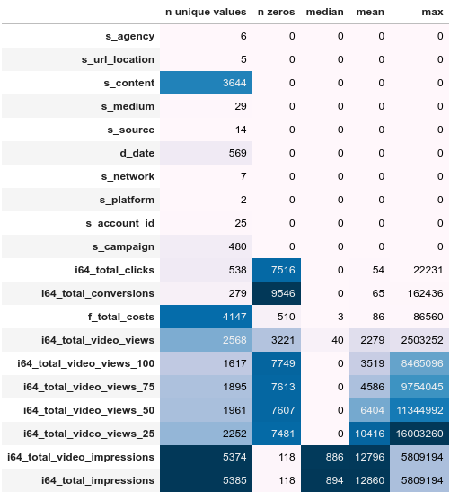
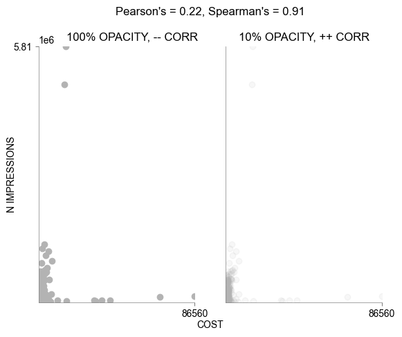

Marketing agency performance analysis in Google BigQuery
Setup:
We are looking for effective marketing agencies to manage our next social media campaign. To decide this, we are provided with a dataset hosted as a BigQuery table.Solution:
Calculating a few summaries for each column of the dataset: - There are 6 agencies of interest
(Video) ImpressionsandCostsdata have the least zero values, which means they are the most reliable metrics- There seem to be distinct groups of data forming, e.g.
Video Viewsof any percentage +ClicksORImpressions+Video Impressions - Based on the attrition of nonzero values, a path taken by users between select variables may be
(Video) Impressions->Views 25->Views 50->Views 75->Views 100 - We can't be sure that records have the same data collection methods. Null values may already be replaced with 0s
Conversionsattempts to measure users that the ads have converted into customers. This is what we are most interested in- However,
Conversionsis difficult to use as a metric when most its values in the dataset are 0 and it is unexpectedly uncorrelated with the other variables - We could select a nonzero subset and compare the agencies for their average conversions, although this adjustment assumes zero values are invalid datapoints, when they might be unsuccessful campaigns
Cost / 1000_Impressionscan be a better metric measuring agency success. It measures outreach rather than the success of each advertisement- Average clicks can be a second, less reliable metric due to most values being 0, that valuably measures engagement
Costs with Impressions:

- Pearson's (linear) correlation is skewed by influential outliers, when there is a clear correlation. Hence we're using Spearman's (rank) correlation
- The high correlation confirms
Cost / 1000_Impressionsas a potential metric, although Impressions must not be zero which it is for 118 values
- The descriptive values shift slightly in the positive direction, which is to be expected when 0 values are deleted
- We should then keep these 0 values with the new metric being
Cost / (1000_Impressions + 1)

-
Angorais looking like the most cost effective marketing agency when looking at outreach
- The bootstrapped 95% confidence intervals of the medians of the top 2 do not overlap with others
Angorais the most cost effective solution at with medianCost per 1000 Impressionsat 1.86 (+- 0.14), followed byApostatesat 2.8 (+0.3, -0.14), withAltercationsandAchestied at third- Means are different from medians: 1.9 != 2.5 and 2.8 != 3.0. This is because of large outliers that we could see in the opacity comparison graph
BaleenandAmourhave very unreliable cost efficiency estimates, so we are only picking among the top 4
Selection:
ANGORA